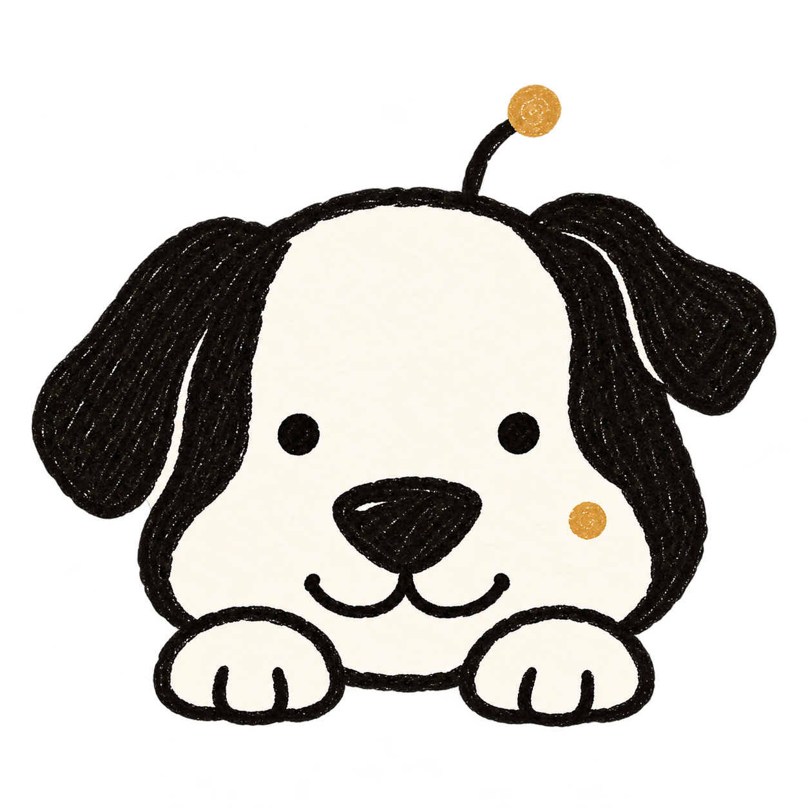

一些陪你工作的、小小表情。
8 张独立素材，沿用天线狗的短折耳、双眼与琥珀色细节。点击角色，预览它陪在输入框旁的样子。
IN CONTEXT
让 Kevin 待在输入框旁。
当前：趴着等候
这是静态摆放预览。实际接入时仍需调整裁切边界、尺寸和状态切换。
这组图片是独立静态素材，并非逐帧动画。角色姿态可以作为后续 SVG / 动画的参考。

继续补充，或告诉我哪里要改…
透明通道与尺寸检查记录见 quality.json。每张素材的生成提示词随文件保存；原有设计稿均保留。